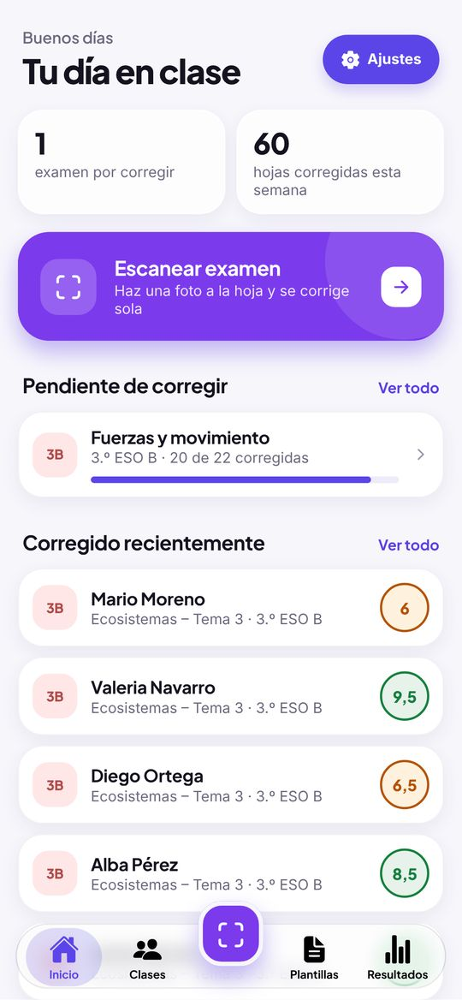
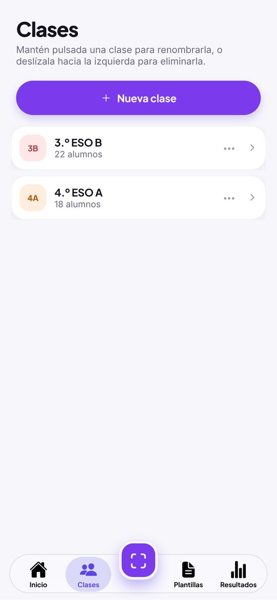
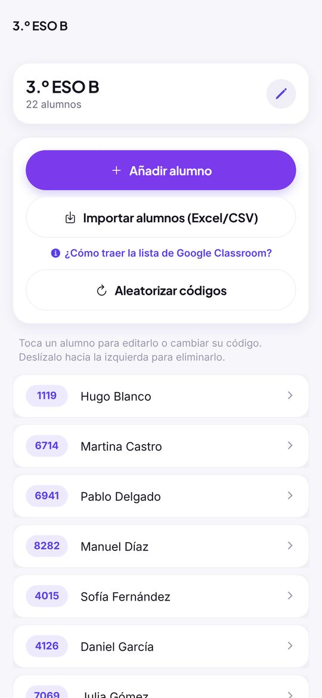
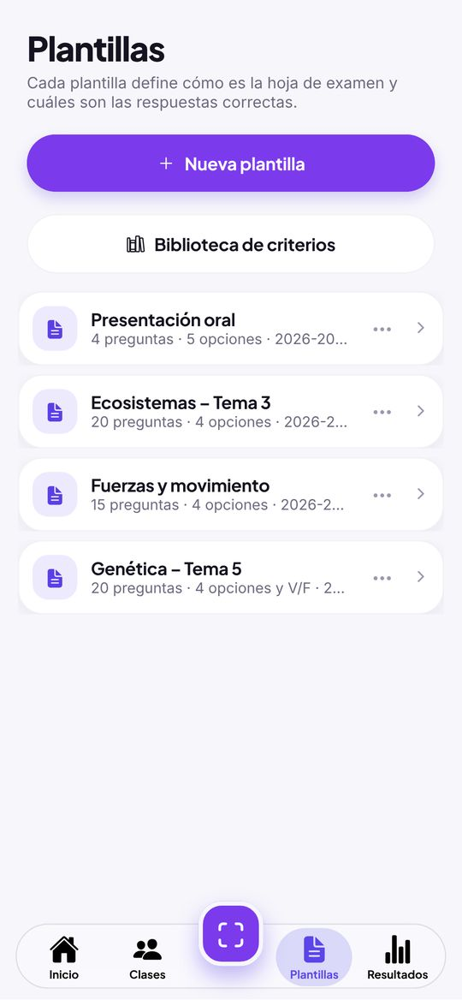
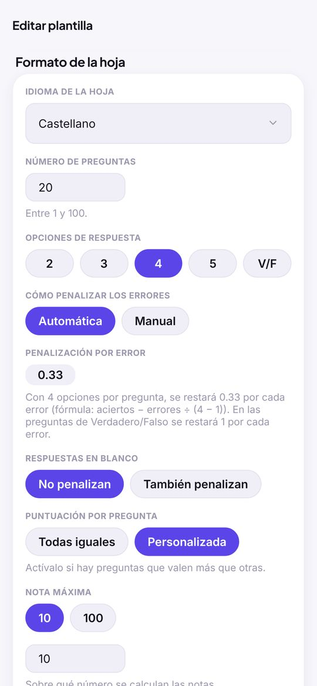
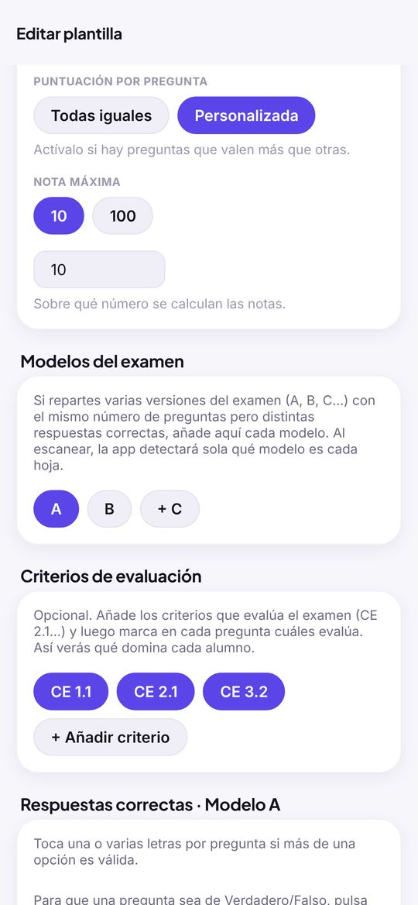
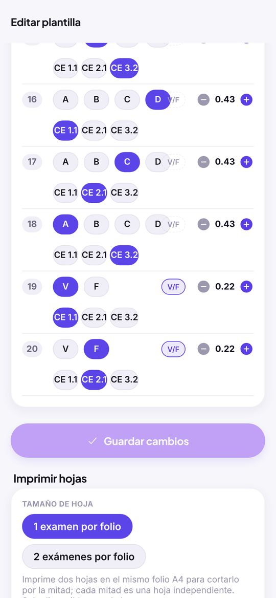
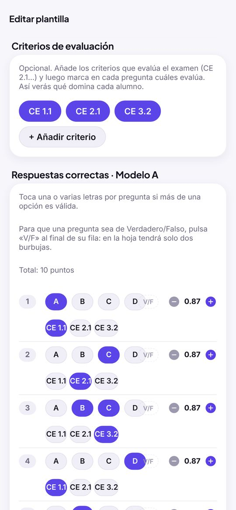
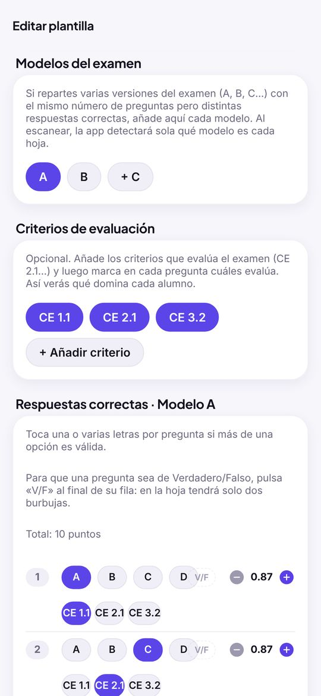
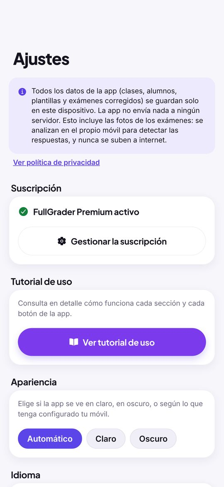

FullGrader corrige exámenes tipo test con la cámara del móvil. No hace falta saber de informática: si sabes hacer una foto con el móvil, sabes usar FullGrader.
Cómo funciona, en 5 pasos
- Crea tu clase. En la pestaña Clases, crea el grupo y añade a tus alumnos. La app le da a cada alumno un número de 4 cifras, que es como su «carnet» en el examen.
- Crea el examen. En la pestaña Plantillas, indica cuántas preguntas tiene y marca cuál es la respuesta correcta de cada una.
- Imprime las hojas de respuestas desde esa misma plantilla. Los alumnos contestan rellenando las burbujas con bolígrafo.
- Haz una foto de cada hoja en la pestaña Escanear. La app lee las respuestas y pone la nota sola.
- Mira las notas en la pestaña Resultados: la nota de cada alumno, las estadísticas de la clase y un archivo para abrir en Excel.
Es tu examen dentro de la app. Guarda cuántas preguntas tiene, cuál es la respuesta buena de cada una y cómo quieres puntuarlo. La creas una vez y la puedes usar con todas tus clases.

Es la primera pantalla que ves al abrir la app. De un vistazo te dice qué tienes pendiente.
El botón grande de arriba. Te lleva directamente a la cámara para corregir.
Exámenes que has empezado a corregir pero en los que aún faltan alumnos por escanear. Tócalo para ir a ese examen.
Las últimas hojas que has corregido, con el nombre del alumno y su nota.


Aquí están tus grupos y sus alumnos. Cada alumno tiene un código de 4 cifras: lo escribe en la hoja del examen para que la app sepa de quién es.
Crear una clase y añadir alumnos
- Toca Nueva clase y escribe su nombre (por ejemplo, «3.º ESO A»).
- Toca la clase para entrar.
- Toca Añadir alumno y escribe el nombre y los apellidos. El código de 4 cifras se pone solo.
- Si ya tienes la lista en un Excel, toca Importar alumnos (Excel/CSV) y elige el archivo. La app encuentra sola los nombres y apellidos: no hace falta escribirlos uno a uno.
En la clase, toca Importar desde Google Classroom, elige tu cuenta de Google y da permiso (solo para ver tus clases y sus listas de alumnos). Después elige de qué clase de Classroom quieres traer los alumnos. Solo se traen nombres y apellidos, nunca correos ni notas, y los alumnos que ya estaban no se duplican. Al terminar, la app cierra la sesión de Google. De momento solo en Android; en iPhone usa el archivo, como se explica abajo.
En el ordenador, abre la clase en classroom.google.com, ve a «Trabajo de clase», abre cualquier tarea (si no hay ninguna, crea una de prueba) y entra en la pestaña con el trabajo de los alumnos. Arriba a la derecha, pulsa la rueda dentada (⚙) y descarga las calificaciones como CSV. Pásate el archivo al móvil y usa Importar alumnos (Excel/CSV): la app reconoce que viene de Classroom y solo coge los nombres, sin correos ni notas. Si vuelves a importar la lista más adelante (por ejemplo, porque ha llegado un alumno nuevo), los que ya estaban no se duplican. Tienes estos mismos pasos en la app, en el enlace ¿Cómo traer la lista de Google Classroom? que hay debajo del botón de importar.
Otras cosas que puedes hacer
Toca su nombre para cambiarle el nombre o el código, o para eliminarlo.
Aleatorizar códigos da un código nuevo a todos los alumnos de la clase a la vez.
En la lista de clases, toca los tres puntos (…) de la clase o mantenla pulsada. El color sirve para distinguirlas de un vistazo. Con Personalizar icono puedes escribir hasta 4 letras o poner un emoji en el cuadradito de la clase; si lo dejas vacío, vuelven las siglas automáticas.
Desliza el dedo hacia la izquierda sobre un alumno o una clase. Cuidado: si borras una clase, se borran también sus alumnos y sus exámenes.




La plantilla es tu examen dentro de la app. Toca una plantilla de la lista para abrirla y cambiar lo que quieras. Con los tres puntos (…), o manteniéndola pulsada, también puedes duplicarla (para hacer un examen parecido sin empezar de cero) o eliminarla. Desde ese mismo menú puedes ir a Imprimir hojas.
Crear un examen, paso a paso
- En la pestaña Plantillas, toca Nueva plantilla.
- Escribe el título y, si quieres, la asignatura y el curso. Salen impresos arriba de la hoja. También puedes añadir el logo de tu centro.
- Elige el idioma de la hoja: es el idioma de los textos impresos, no el de la app. Toca el campo y se abre una ruleta con los 9 idiomas disponibles; al principio sale el idioma de la app.
- Escribe el número de preguntas y elige cuántas opciones de respuesta tiene cada una (de 2 a 5). Si todas las preguntas son de verdadero o falso, elige V/F.
- Decide si los errores restan y si las preguntas en blanco también restan. Si no quieres complicarte, deja la penalización en 0: así los errores no restan nada.
- Elige la nota máxima. Normalmente, 10.
- En Respuestas correctas, toca en cada pregunta la letra buena.
- Toca Crear plantilla. Si estás cambiando una plantilla que ya existía, el botón se llama Guardar cambios. Al crearla, la app te lleva directamente a la página Imprimir hojas.
Es lo que resta cada error. Por ejemplo, con 0,25, cuatro errores quitan lo mismo que da un acierto. Si eliges Automática, la app usa la fórmula habitual de los tests: con 4 opciones, cada error resta un tercio de acierto. En las preguntas de Verdadero/Falso, cada error resta un acierto entero.
Imprimir las hojas de respuestas
Al crear la plantilla, la app te lleva directamente a la página Imprimir hojas. Más adelante puedes volver a ella desde los tres puntos (…) de la plantilla en la lista, o abriendo la plantilla y bajando hasta el final. Tienes dos opciones:
Una hoja en blanco. El alumno escribe a mano su código de 4 cifras. Puedes hacer tantas fotocopias como quieras.
Una hoja por alumno, con su nombre y su código ya impresos. Elige la clase y la fecha del examen.
Si el examen tiene pocas preguntas, puedes imprimir dos hojas en cada folio y cortarlo por la mitad. Ahorras papel.
En los apartados siguientes se explica cómo dar más puntos a unas preguntas que a otras, aceptar más de una respuesta, hacer preguntas de Verdadero/Falso, trabajar con criterios de evaluación y repartir varios modelos del examen. Todo es opcional: si no lo necesitas, sáltatelo.

Normalmente todas las preguntas valen lo mismo. Si quieres que alguna cuente más (por ejemplo, porque es más difícil), puedes darle más puntos.
Cómo se hace
- Abre la plantilla.
- En Puntuación por pregunta, elige Personalizada.
- En la lista de Respuestas correctas, al lado de cada pregunta aparecen los botones − y +. Úsalos para indicar cuántos puntos vale esa pregunta.
- Encima de la lista verás el total de puntos del examen.
- Toca Guardar cambios.
Un examen de 10 preguntas: las 8 primeras valen 1 punto y las 2 últimas, 3 puntos cada una. En total, 14 puntos. La nota final se sigue dando sobre 10 (o sobre la nota máxima que hayas elegido): la app hace la regla de tres sola. Un alumno que solo acierta las 2 últimas consigue 6 de 14 puntos, es decir, un 4,29.
A veces una pregunta tiene dos respuestas válidas, o te das cuenta después del examen de que estaba mal planteada y otra opción también debería valer. Puedes marcar varias letras como correctas en la misma pregunta.
Cómo se hace
- Abre la plantilla.
- En Respuestas correctas, toca todas las letras que den por buena esa pregunta. Si vuelves a tocar una letra marcada, se desmarca.
- Toca Guardar cambios.
Al corregir, si el alumno ha marcado cualquiera de esas letras, cuenta como acierto.
Ya has corregido el examen y te das cuenta de que en la pregunta 12 la B también es correcta. Abre la plantilla, toca también la B en la pregunta 12 y guarda. Luego ve a Resultados, abre ese examen y toca Aplicar ajustes de plantilla: la app vuelve a calcular todas las notas sin tener que escanear otra vez.

Puedes hacer un examen entero de verdadero o falso, o mezclar preguntas de verdadero o falso con preguntas normales de opciones (A, B, C, D) en el mismo examen.
Todo el examen de Verdadero/Falso
- Abre la plantilla (o crea una nueva).
- En Opciones de respuesta, toca V/F.
- En Respuestas correctas, marca en cada pregunta si la buena es la V (verdadero) o la F (falso).
- Toca Guardar cambios.
Mezclar preguntas de opciones y de Verdadero/Falso
- En Opciones de respuesta, elige cuántas opciones tienen las preguntas normales (por ejemplo, 4).
- En Respuestas correctas, al final de la fila de cada pregunta hay un botón V/F con el borde discontinuo. Tócalo en las preguntas que sean de verdadero o falso: esa pregunta pasa a tener solo las opciones V y F. Si lo vuelves a tocar, vuelve a ser una pregunta normal.
- Marca la respuesta correcta de cada pregunta y toca Guardar cambios.
En un examen de 20 preguntas con 4 opciones, conviertes la 5, la 12 y la 18 en Verdadero/Falso. En la hoja impresa, esas tres preguntas tienen solo dos burbujas, V y F, y el resto tienen A, B, C, D. Al escanear, la app sabe de qué tipo es cada pregunta.
V/F en castellano, catalán, gallego, francés, italiano y portugués; T/F en inglés; W/F en alemán; E/G en euskera.
Cada pregunta resta según sus opciones: un error en una de Verdadero/Falso resta un acierto entero, y uno en una de 4 opciones, un tercio.
Todos los modelos se imprimen en la misma hoja, así que las preguntas de Verdadero/Falso tienen que estar en los mismos números en todos los modelos. Si en el modelo A la 5 es de Verdadero/Falso, en el modelo B la 5 también tiene que corresponder a una pregunta de Verdadero/Falso. Si no coincide, la app te avisa al guardar.


Si en tu programación trabajas con criterios de evaluación, resultados de aprendizaje o competencias, puedes indicar qué criterio evalúa cada pregunta. Así la app te dice, para cada alumno, qué parte de cada criterio domina. Por ejemplo: «Marta: CE 2.1 → 90 %, CE 2.3 → 40 %».
1. Crea los criterios
- Abre la plantilla.
- En la sección Criterios de evaluación, toca + Añadir criterio.
- Escribe un nombre corto, tal como aparece en tu programación (por ejemplo, «CE 2.1»).
- Repite con cada criterio que evalúe el examen.
Cada criterio que crees se guarda en tu Biblioteca de criterios (el botón de al lado de «Nueva plantilla», en la pestaña Plantillas): así puedes añadirlo con un toque a cualquier otra plantilla, sin volver a escribirlo.
Si te equivocas, toca el criterio para cambiarle el nombre o eliminarlo.
2. Indica qué evalúa cada pregunta
En la lista de Respuestas correctas, debajo de las letras de cada pregunta aparecen tus criterios. Toca los que evalúa esa pregunta (se quedan marcados). Una pregunta puede evaluar uno, varios o ninguno. Al acabar, toca Guardar cambios.
3. Consulta los resultados
En Resultados, abre el examen. En Por criterio verás la media de la clase en cada criterio.
En ese mismo examen, toca la hoja de un alumno para ver sus porcentajes.
Al tocar Exportar notas, el archivo lleva una columna por criterio con el porcentaje de cada alumno. Es justo lo que suele hacer falta para poner las notas por criterios.
El criterio CE 2.1 está en las preguntas 1, 2, 3 y 4. Marta acierta 3 de las 4: tiene un 75 % en CE 2.1. Si las preguntas valen puntos distintos, se tiene en cuenta. La penalización no se aplica aquí: lo que se mide es qué parte del criterio sabe el alumno, no su nota.
4. Mira cómo evoluciona cada alumno
En Resultados, toca una clase y después Progreso por criterio, arriba del todo. Ahí se juntan todos los exámenes corregidos de esa clase, en orden de fecha:
Elige un criterio y verás una columna por examen con la media de la clase (toca una columna para ver de qué examen es). Debajo sale cada alumno con su evolución, su último resultado y cuánto ha subido o bajado respecto al examen anterior.
Elige un alumno y verás todos sus criterios, cada uno con su evolución examen a examen. Muy útil para preparar la evaluación o una reunión con la familia.
El botón Exportar a Excel, arriba de la pantalla, crea un archivo con una hoja de Resumen (la media de cada alumno en cada criterio, perfecta para poner la nota de la evaluación) y una hoja por criterio con el resultado de cada alumno en cada examen. Puedes enviarlo por correo, guardarlo en Drive, etc.
CE 2.1 aparece en el examen de octubre y en el de diciembre. Marta sacó un 40 % en octubre y un 75 % en diciembre: verás sus dos columnas y, al lado, «75 %» con una flecha hacia arriba y «+35».

Para que no se copien, puedes repartir versiones distintas del mismo examen: el modelo A, el B, etc., con las preguntas en otro orden y las respuestas cambiadas de sitio. La app corrige cada hoja con su modelo.
Cómo funciona en el aula
Todas las hojas de respuestas se imprimen iguales. Cada alumno marca en su hoja, en la casilla del modelo, qué modelo le ha tocado (A, B, C o D). Al escanear, la app lee esa casilla y usa las respuestas correctas de ese modelo.
1. Añade los modelos
- Abre la plantilla.
- En Modelos del examen, toca + B (y + C o + D si los necesitas).
- Toca la letra de un modelo para ver y rellenar sus respuestas.
2. Marca las respuestas correctas de cada modelo
Con el modelo B elegido, marca en cada pregunta la letra que es correcta en el modelo B. Si has cambiado las respuestas de sitio, no será la misma que en el A. No pasa nada: cada modelo tiene sus propias respuestas correctas.
3. Si has cambiado el orden de las preguntas: la casilla «= A»
En los modelos B, C y D, al lado de cada pregunta hay una casilla que pone = A. Ahí escribes qué número tiene esa misma pregunta en el modelo A.
- La pregunta 1 del modelo B es la pregunta 7 del modelo A → en la pregunta 1 del B escribes 7.
- La pregunta 2 del modelo B es la pregunta 3 del modelo A → en la pregunta 2 del B escribes 3.
- Y así con todas las preguntas.
¿Para qué sirve? Los puntos de cada pregunta y los criterios de evaluación se configuran solo en el modelo A. Con esta casilla, la app sabe que la pregunta 1 del B es la misma que la 7 del A y le aplica sus puntos y sus criterios. Además, las estadísticas de preguntas más falladas y más acertadas juntan a todos los alumnos por la pregunta de verdad, les haya tocado el modelo que les haya tocado.
No toques nada: las casillas ya vienen con el mismo número que la pregunta.
Has escrito el mismo número del modelo A en dos preguntas. Cada pregunta del A tiene que aparecer una sola vez. La app no te deja guardar hasta que lo corrijas.

Además de exámenes tipo test, FullGrader sirve para evaluar con rúbricas: trabajos, exposiciones orales, proyectos, cuadernos… En vez de que el alumno conteste preguntas, eres tú quien marca en la hoja, en cada criterio, el nivel de logro que ha alcanzado. La app lee la hoja y calcula la nota.
Crear una rúbrica
- En Plantillas, toca Nueva plantilla y escribe el título.
- En Tipo de plantilla, elige Rúbrica.
- En Niveles de logro, revisa los niveles y los puntos de cada uno. Vienen puestos Experto (4), Avanzado (3), Aprendiz (2), Novato (1) y Sin hacer (0), pero puedes cambiarles el nombre y los puntos, añadir niveles (hasta 8) o quitarlos (mínimo 2).
- En Criterios de la rúbrica, escribe el nombre de cada criterio, por ejemplo «Expresión oral» o «Uso de fuentes». Puedes tener hasta 15.
- Elige la Nota máxima y toca Crear plantilla.
Importar una rúbrica desde Excel (por ejemplo, de Corubrics)
Si ya tienes la rúbrica hecha en Excel o en Corubrics, no hace falta escribirla otra vez.
- Si quieres un archivo de ejemplo con el formato correcto, toca Descargar plantilla de rúbrica (Excel) y rellénalo.
- Toca Importar rúbrica desde Excel y elige el archivo. La app coge los niveles, los criterios, el peso de cada criterio y el texto de cada casilla.
En la primera fila, el nombre de cada nivel; en la segunda, sus puntos. En la primera columna, un criterio en cada fila. Si la última columna se llama PESO, indica cuánto cuenta cada criterio en la nota (por ejemplo, 0,25 = 25 %). En el resto de casillas va el texto que describe cada nivel de cada criterio.
Si la rúbrica importada trae pesos, al lado de cada criterio verás su Peso en %, y lo puedes cambiar. Si no trae, todos los criterios cuentan igual.
Debajo de cada criterio, toca Descripción de cada nivel para ver y editar lo que se espera en cada nivel. Es el texto que se importa del Excel y el que sale en la rúbrica impresa a página completa.
Con una rúbrica escrita en la app, la hoja lleva una fila de burbujas por criterio y, debajo, una leyenda que explica qué es cada fila y cada columna. Con una rúbrica importada con texto, se imprime la tabla completa de la rúbrica, con una burbuja en cada casilla (en ese caso, solo en hoja entera, no 2 por folio).
Corregir con la rúbrica
- Imprime las hojas igual que con un examen: con el nombre de cada alumno o en blanco.
- Mientras evalúas, rellena en cada criterio la burbuja del nivel que ha alcanzado el alumno.
- Escanea la hoja en Escanear, como cualquier otra. La app lee qué nivel has marcado en cada criterio y pone la nota.
Una rúbrica de 4 criterios con niveles de 4, 3, 2, 1 y 0 puntos da como máximo 16 puntos. Si un alumno saca 4, 3, 3 y 2, suma 12 de 16 puntos: sobre 10, un 7,5. Si los criterios tienen peso, cada uno cuenta según su peso. Un criterio sin marcar cuenta 0 puntos.


Cómo corregir
- Ve a la pestaña Escanear.
- Elige la clase y después la plantilla (el examen).
- Comprueba que arriba esté elegido el tamaño de hoja correcto: 1 examen por folio o 2 exámenes por folio, según cómo hayas impreso la hoja.
- Pon la hoja sobre la mesa y encájala dentro del marco blanco de la pantalla.
- Toca el botón redondo grande para hacer la foto. Si no ha salido bien, toca Repetir; si está bien, toca Usar esta foto.
- Revisa lo que ha leído la app y toca Aceptar para guardarlo. Ya puedes pasar a la siguiente hoja.
La pantalla de revisión
Verde: el alumno ha acertado. Rojo: ha marcado una respuesta equivocada. Aro verde: dónde estaba la respuesta correcta. Puedes ampliar la foto con dos dedos.
Si en una pregunta hay una respuesta marcada claramente y otra burbuja con una marca más débil (por ejemplo, una respuesta borrada a medias), la app cuenta la más oscura, pero te la muestra con un aro naranja discontinuo y la palabra Revisar. Míralo antes de aceptar y, si hace falta, toca la burbuja correcta. En las rúbricas, la fila sale en naranja.
Al guardar la hoja, la app la endereza y la recorta usando los cuatro cuadrados negros de las esquinas. Así la foto queda recta y sin bordes sobrantes, aunque la hayas hecho un poco torcida.
Si la app ha leído mal alguna respuesta, toca la burbuja buena en la foto o la letra en la lista de abajo.
La app lee el código de 4 cifras de la hoja y te dice de quién es. Si no lo ha leído bien, puedes cambiarlo. Si no sabes de quién es, toca Guardar sin asignar y lo asignas más tarde.
Si el examen tiene varios modelos, te dice cuál ha detectado. Si se ha equivocado, cámbialo. Si no ha podido leer la casilla del modelo (porque el alumno no la ha marcado o se ve mal), la app te pregunta qué modelo es y tienes que elegirlo antes de guardar la hoja. Así nunca se corrige con las respuestas de otro modelo.
Si no quieres guardar esa hoja, toca Descartar y no se guarda nada.

Aquí están todos los exámenes corregidos, agrupados por clase. Toca una clase para ver sus exámenes y toca un examen para ver todo el detalle.
Desliza la clase hacia la izquierda. Se borran sus exámenes corregidos, pero la clase y los alumnos se quedan.
Dentro de una clase, arriba del todo, verás cómo evoluciona cada alumno en cada criterio de evaluación a lo largo de todos los exámenes. Se explica en el apartado «Criterios de evaluación (CE)».
Dentro de un examen
La nota media, la nota que más se repite, cuántos han aprobado, cómo se reparten las notas y qué preguntas se han fallado y acertado más. Si usas criterios de evaluación, también verás la media de la clase en cada uno. En cada pregunta verás también qué opción equivocada ha marcado más gente (por ejemplo, «Opción más marcada por error: C (8)»): te ayuda a ver qué se ha entendido mal en clase. En las rúbricas no salen las preguntas más falladas y más acertadas, porque no hay respuestas correctas: verás la nota media, el reparto de notas y la media de cada criterio.
Con 10 hojas corregidas o más, la app mira si cada pregunta sirve para distinguir a quien domina el tema de quien no. Para ello compara el 27% de alumnos con mejor nota con el 27% con peor nota: una buena pregunta la aciertan bastante más los primeros. Debajo de cada pregunta verás «Distingue bien», «Distingue poco», «No distingue: revisar» o «La acierta casi todo el mundo», con el porcentaje de acierto de cada grupo (por ejemplo, «Distingue bien (mejores notas: 90%, peores: 30%)»). En el apartado «Preguntas a revisar» salen juntas las que no distinguen, para que decidas si las cambias en el próximo examen. Si una pregunta la aciertan claramente más los de peor nota, la app te avisa: muchas veces es que la respuesta correcta se puso mal en la plantilla.
La lista de alumnos con su nota. Toca una hoja para ver la foto con las respuestas marcadas y, si usas criterios, los porcentajes de ese alumno. Puedes ampliar la foto con dos dedos (o con un doble toque) para ver o corregir las respuestas con más detalle.
Dentro de la hoja, toca Editar respuestas, cambia lo que haga falta y guarda. La nota se recalcula sola.
Si una hoja se ha quedado sin alumno, ábrela, toca Asignar a alumno y elige quién es.
Crea un archivo que se abre con Excel o se puede pasar a tu cuaderno de notas. Lleva el número y el nombre de cada alumno, su modelo, los aciertos, los errores, las respuestas en blanco, la nota y, si los usas, el porcentaje de cada criterio. Puedes enviarlo por correo, guardarlo en Drive, etc.
Dentro de un examen, toca Enviar notas a Classroom. La app te pide iniciar sesión con tu cuenta de Google y dar un permiso (crear tareas y poner notas), y luego eliges la clase de Classroom. Antes de enviar, te enseña cuántos alumnos ha encontrado (compara el nombre y los apellidos con los de Classroom) y cuáles no, para que los revises. Al confirmar, crea una tarea nueva en esa clase —los alumnos la verán aparecer— y pone las notas como borrador: los alumnos no las ven hasta que tú pulses «Devolver» en Classroom. Si vuelves a tocar el botón en el mismo examen, puedes Actualizar las notas en la misma tarea, sin crear otra. Para que un alumno se encuentre, su nombre y apellidos tienen que estar escritos igual en la app y en Classroom. Las hojas sin alumno asignado no se envían. Solo salen del móvil el título de la prueba y la nota de cada alumno; nunca fotos ni respuestas.
Si cambias la plantilla después de corregir (una respuesta correcta, la penalización, los puntos…), este botón vuelve a calcular todas las notas del examen. No hay que escanear nada otra vez.
Toca donde pone «Sobre 10» para calcular las notas de ese examen sobre otro número (por ejemplo, sobre 100). Solo afecta a ese examen.
Desliza una hoja hacia la izquierda para borrarla, o usa Eliminar examen completo, al final de la pantalla.

En la pantalla de Inicio, toca el botón morado Ajustes, arriba a la derecha. La barra de abajo tiene las cinco secciones del día a día (Inicio, Clases, Escanear, Plantillas y Resultados), con Escanear como botón redondo grande en el centro.
Elige cómo quieres ver la app: Claro (fondo blanco), Oscuro (fondo negro, más cómodo de noche) o Automático (cambia solo, igual que tu móvil).
El idioma de la app. «Automático» usa el de tu móvil.
Si lo activas, la app pide tu Face ID, tu huella o el código del móvil cada vez que la abres o vuelves a ella. Así nadie que coja tu móvil puede ver las notas de tus alumnos. Para activarlo, tu móvil tiene que tener puesto un código de bloqueo.
Abre esta guía.
Protege tus copias de seguridad con una contraseña. Solo la pones una vez y después se usa sola. Te la pedirá si recuperas una copia en otro móvil, así que apúntala en un sitio seguro.
Guarda todo (clases, alumnos, exámenes, notas, biblioteca de criterios y ajustes) en un archivo que puedes llevar a Drive, al ordenador o a un pendrive. Hazlo de vez en cuando: si pierdes el móvil o cambias de móvil, no perderás nada.
Recupera tus datos a partir de una copia. Cuidado: sustituye todo lo que haya ahora en la app.
Repite la presentación que sale la primera vez que abres la app.
Escríbenos un correo si tienes dudas o problemas, o consulta la política de privacidad.
En Ajustes → Suscripción ves cuántas evaluaciones llevas este mes. La versión gratuita permite guardar 80 evaluaciones nuevas al mes (tests y rúbricas) y se reinicia el día 1. Premium (suscripción anual con 7 días de prueba gratis) quita el límite y activa la conexión con Google Classroom, la creación de rúbricas, las dos hojas por papel, el icono personalizado de cada clase, más de dos modelos de examen, el logo propio, el análisis de preguntas, la evolución por criterios, los informes en PDF y la copia de seguridad automática. Lo demás es gratis (corregir tests, corregir las rúbricas que ya tengas, exportar notas, copias de seguridad), incluido importar alumnos desde Excel o CSV. El pago lo gestiona Google Play: puedes cancelar cuando quieras desde ahí y Restaurar compra si cambias de móvil. Al llegar al límite sigues pudiendo ver y exportar todo.
Al final de Ajustes tienes los botones de nuestras cuentas de Instagram y X (@FullGrader), con novedades y trucos de la app.
Busca un sitio con más luz o enciende el flash, pon la hoja plana y encájala bien en el marco. Tienen que verse los 4 cuadrados negros de las esquinas, y no gires ni la hoja ni el móvil. Si aun así falla alguna respuesta, puedes cambiarla a mano en la pantalla de revisión.
Además de la luz y del encuadre, comprueba que el tamaño de hoja elegido arriba en Escanear coincide con el que imprimiste: 1 examen por folio o 2 exámenes por folio. Si eliges uno y la hoja es del otro, la app no encuentra las esquinas.
Arregla la plantilla y guarda. Después, en Resultados, abre el examen y toca Aplicar ajustes de plantilla.
Pasa si el alumno no escribió bien su código. Guárdala con Guardar sin asignar y, más tarde, en Resultados, ábrela y toca Asignar a alumno.
Si hiciste una copia de seguridad, instala la app en el móvil nuevo y, en Ajustes, toca Restaurar copia de seguridad.